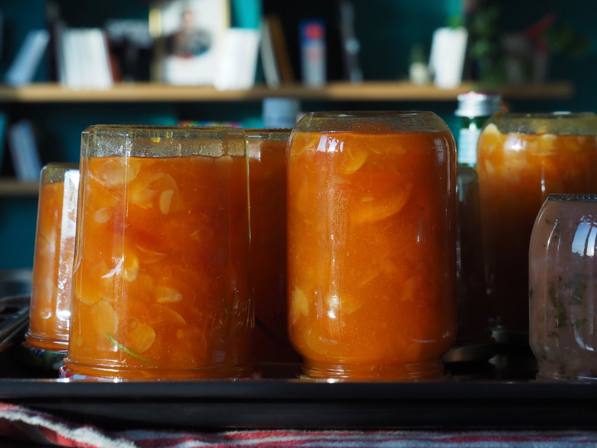

Été
Salé
Pesto de coriandre aux amandes
Pour un petit pot | Temps préparation : 10 min | Temps cuisson : 0 min
Condiment idéal pour cuire un poisson en y ajoutant un peu de chapelure ou pour simplement agrémenter un plan de pâtes.
Ingrédients
- 1 botte de coriandre
- 1 poignée d’amande
- 2 cs de graines de tournesol
- Huile d’olive
- 1 gousse d’ail
Consignes
- ELaver et bien sécher la coriandre
- Trier les tiges et ne garder que les feuilles, les placer dans le mixer
- Ajouter les amandes, les graines de tournesol, la gousse d’ail dégermée et coupée en morceaux
- Mettre de l’huile et commencer à mixer. Ajuster l’huile pour obtenir la consistance et le gout souhaité
- Utiliser tout de suite ou conserver dans un pot en verre au frigo pendant une petite semaine
Caviar de courgettes, soja et sésame
~Pour 3 personnes | Temps préparation : 15 min | Temps cuisson : 30 min
A tartiner ou bien pour en accompagnement d’un poisson
Ingrédients
- 1 grosse courgette ou 2 petites
- 1 oignon
- 2 cs de sauce soja
- Huile d’olive
- 3 cc de tahiné
- Quelques graines de sésames pour la décoration
Consignes
- Couper l’oignon grossièrement et mettre à suer dans un peu d’huile d’olive
- Quand il a doré, déglacer avec la sauce soja
- Ajouter la courgette coupée en gros cube après l’avoir épluchée
- Faire cuire à couvert jusqu’à ce que la courgette soit fondante
- Placer dans le tout dans le mixer et ajouter le tahiné
- Mixer jusqu’à obtenir une consistance crémeuse
- Selon les envies, placer au frais pour déguster froid ou bien déguster tiède
- Au moment de servir, rajouter les graines de sésames
RGaspacho de tomates au lait de coco
4 personnes | Temps préparation : 15 min | Temps cuisson : 20 min | Temps de repos : 1h (refroidissement)
Une belle entrée d’été, rafraichissante et relevée !
Ingrédients
- 1,4 kg de tomates
- 1 oignon
- Un morceau de gingembre de 4 cm
- 4 bâtons de citronnelle de 15 cm
- 2 pincées de piment de Cayenne
- Huile d’olive
- 25 cl de lait de coco
Consignes
- Ébouillanter les tomates 30 s pour faciliter l’épluchage
- Éplucher et épépiner grossièrement les tomates
- Émincer l’oignon et la citronnelle assez finement, éplucher le gingembre
- Les faire revenir dans de l’huile d’olive
- Rajouter ensuite les tomates coupées en morceaux
- Faire cuire quelques minutes puis rajouter l’intégralité du lait de coco et le piment
- Complétez avec de l’eau pour que les tomates soient quasiment submergées
- Cuire 20 min puis mixer. Gouter, ajuster l’assaisonnement
- Laisser refroidir puis mettre au réfrigérateur pour déguster froid
SSoupe froide de poivron/span>
~3 personnes | Temps préparation : 20 min | Temps cuisson : 20-30 min selon les fours| Temps de repos : 1h (refroidissement)
Douceur estivale et rafraichissante
Ingrédients
- 6 poivrons (plutôt rouge ou jaune)
- Un peu de crème
- Basilic de préférence ou autre herbe aromatique
Consignes
- Laver, puis couper les poivrons en deux et ôter les pépins
- Les déposer sur une plaque allant au four, mettre sur la fonction grill
- Les sortir lorsque la peau a noirci (20-30 min) et les mettre immédiatement dans un Tupperware ou un sac congélation
- Fermer et les laisser au moins 30 min voire plusieurs heures
- Une fois les poivrons froids, retirer la peau et les couper
- Les placer dans le mixer avec un peu d’eau, le basilic et la crème
- Mixer jusqu’à obtenir une consistance crémeuse en ajustant si besoin avec de la crème ou de l’eau
- Assaisonner et mettre au réfrigérateur pour déguster froid
Tatin de tomates cerise
6 personnes (entrée) ou 3 personnes (plat) | Temps préparation : 15 min | Temps cuisson : 20 min
Les tomates cerises valent mieux qu’un apéro !
Ingrédients
- 1 pâte feuilletée ou brisée
- 800 g de tomates cerises (jusqu’à 1 kg)
- ½ oignon
- Quelques herbes de Provence
- Huile d’olive
- Vinaigre balsamique
- 1 cs de sucre
Consignes
- Laver les tomates cerise et les percer de part en part avec un cure-dent
- Les faires revenir dans une grande poêle feu doux avec un peu de vinaigre balsamique (1 cs) jusqu’à ce qu’elles aient rendu une bonne partie de leur eau
- Égoutter les tomates cerises, éventuellement à la passoire, en faisant attention à ne pas trop les abimer les tomates cerises. Les réserver.
- Mettre le sucre dans la poêle et attendre qu’il caramélise un peu sans remuer
- Rajouter les tomates cerises, les herbes et laisser les tomates cerises se caraméliser un peu à leur tour. Rajouter éventuellement un peu de vinaigre selon les gouts
- Verser délicatement les tomates dans un plat à quiche recouvert préalablement de papier sulfurisé. * Laisser un peu de place sur les bords
- Recouvrir de la pâte feuilletée en repliant et appuyant les bords de pâtes sur les côtés du plat. * Percer légèrement le centre de la pâte avec la pointe d’un couteau
- Enfourner à 180°C pour 25 min environ jusqu’à ce que la pâte soit légèrement dorée sur le dessus
Sucré
Fiadone corse
8 personnes | Temps préparation : 20 min | Temps cuisson : 35 min
La tradition corse, pour une fin de repas légère et fraiche !
Ingrédients
- 400 g de brocciu
- 5 œufs
- 100 g de sucre
- 1 citron bio
- 15 g de beurre
Consignes
- Faire égoutter le brocciu si besoin
- Zester le citron après l’avoir lavé. Prélever et réserver le jus.
- Séparer les blancs des jaunes
- Mélanger les jaunes avec le sucre. Ajouter ensuite le brocciu sans trop battre puis le zeste et le jus de citron
- Monter les blancs en neige très ferme. Incorporer les délicatement à la spatule à la préparation précédente
- Beurrer un moule à tarte ou à manquer, verser et égaliser les pâtes
- Faire cuire 35 min à 180°C
- Laisser tiédir avant de démouler. Servir froid

Tarte framboise et thé matcha
6 personnes | Temps préparation : 20 min | Temps cuisson : 35 min
Pour un résultat gutatif et esthétique, sans trop de difficultés
Ingrédients
- Sablé breton (cadre de 12x24 cm):
- 75 g de beurre
- 70 g de sucre
- 30 g de jaune d’œuf
- 100 g de farine
- 2 g de levure chimique
- 2 g de sel
- Crème thé matcha
- 2 cc de poudre de thé matcha
- 250 g de lait
- 50 g de jaunes d’œufs
- 40 g de sucre
- 25 g de maïzena
- 25 g de beurre
- 2 barquettes de framboises
Consignes
- Préchauffer le four à 170°C
- Travailler le beurre à la spatule jusqu’à obtenir une pommade
- Ajouter le sucre et mélanger à la spatule
- Ajouter ensuite jaunes d’œufs, farine, levure et sel puis homogénéiser
- Foncer et aplanir la pâte dans le cadre posé sur une feuille de papier sulfurisé
- Faire cuire le biscuit 20 à 30 min. Le décadrer/démouler une fois refroidi
- Mélanger le sucre de la crème pâtissière avec le thé matcha
- Blanchir les jaunes avec le mélange sucre-matcha dans un cul-de poule puis ajouter la maïzena
- Mettre le lait à bouillir dans une casserole, en verser la moitié sur le mélange précédent et fouetter
- Remettre le tout dans la casserole et chauffer en fouettant jusqu’à épaississement. Stopper la cuisson un peu avant la consistance souhaitée puis incorporer le beurre
- Laisser reposer jusqu’à ce que la crême soit froide
- Monter la tarte en alternant framboise et points de crème matcha déposés à la poche à douille
Confiture pêche-menthe
Pour 5/6 pots | Temps préparation : 30 min | Temps repos : plusieurs heures| Temps cuisson : 20-30 min
Demande un peu de temps mais permet de retrouver la douceur des fruits d’été jusqu’au coeur de l’hiver !
Ingrédients
- 1,5 kg de pêches blanches (pelées, dénoyautées)
- 1 kg de sucre
- 10 tiges de menthe
Consignes
- Laver, éplucher et dénoyauter les pêches
- Couper les en quart puis les quarts en 2
- Rajouter la menthe ciselée et le sucre
- Faire macérer de quelques heures jusqu’à toute une nuit
- Faire cuire à feu moyen en remuant sans cesse au moins une vingtaine de minutes : l’écume va commencer à se former puis devra avoir totalement disparu. Faire le test de l’assiette pour savoir si la confiture est cuite
- Mettre en pot directement. Les fermer et les retourner immédiatement
CConfiture abricot/romarin/amande
Pour 7 pots | Temps préparation : 30 min | Temps repos : plusieurs heures| Temps cuisson : 20-30 min
Demande un peu de temps mais permet de retrouver la douceur des fruits d’été jusqu’au coeur de l’hiver !
Ingrédients
- 1,8 kg d’abricot
- 1,3 kg de sucre
- 4 tiges de romarin de 15 cm environ
- 100 g d’amandes effilées
Consignes
- Laver et dénoyauter les abricots
- Les couper en quart
- Rajouter le romarin et le sucre
- Faire macérer de quelques heures jusqu’à toute une nuit
- Faire cuire à feu moyen en remuant sans cesse au moins une vingtaine de minutes : l’écume va commencer à se former puis devra avoir totalement disparu. Faire le test de l’assiette pour savoir si la confiture est cuite.
- Retirer les branches de romarin
- Mettre en pot directement. Les fermer et les retourner immédiatement
